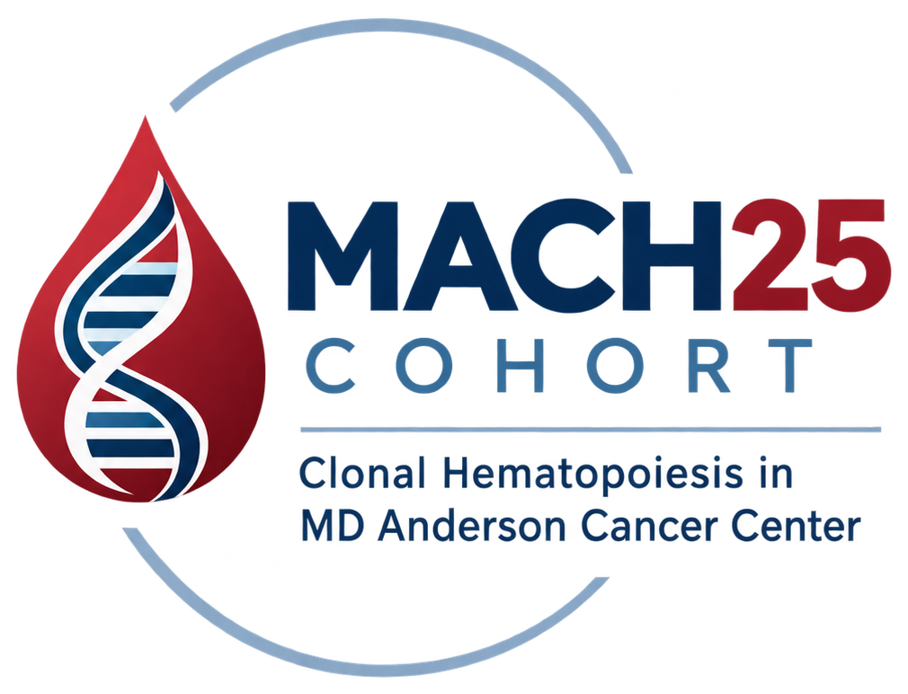

Age at blood draw
DEM · CONTINUOUS VARIABLE
Distribution summaryParticipants
INTERPRETATION NOTE

Explore the dataMD Anderson Cancer Center · Adult cohort release SYS//M25.24309
MACH25 is a longitudinal research cohort built to study clonal hematopoiesis below the conventional 2% variant allele frequency threshold in adults with solid tumors.
01 · The cohort
MACH25 connects deep baseline sequencing with registry-linked follow-up, giving researchers a shared platform for asking how small clones emerge, persist and matter across cancer populations.
Sequential exclusions are reported in order; exclusions can overlap.
How MACH25 classifies variants
Variants detected below the conventional 2% VAF threshold. MACH25 is designed to make this low-signal biology measurable at scale.
02 · The signal
Low-VAF variants are not simply “below a cutoff.” They are measured with thousands of reads and a median of 21 alternate reads per retained variant.
Cohort signal map
The source population narrows to 24,309 eligible adults, then separates into three mutually exclusive baseline clonal hematopoiesis groups.
Explore cohort variables03 · Data explorer
Browse the public cohort data dictionary. Select a category, then a variable to view its definition, availability and aggregate distribution.
DEM · CONTINUOUS VARIABLE
04 · The platform
Use MACH25 as a starting point for reproducible, longitudinal studies of clonal hematopoiesis in the context of cancer.
Explore the 23-gene capture panel and gene-level mutation patterns across the cohort.
View Figure 02 ↗Baseline sequencing is paired with vital status and registry-linked outcomes for longitudinal modeling.
05 · About MACH25
MACH25 — Clonal Hematopoiesis in MD Anderson Cancer Center — is a research cohort for understanding the earliest measurable traces of clonal hematopoiesis in people with solid tumors.
Low-VAF detection supports discovery and association studies. It does not replace orthogonal assay validation or clinical adjudication.